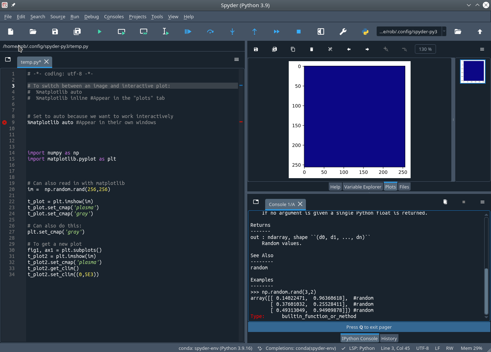
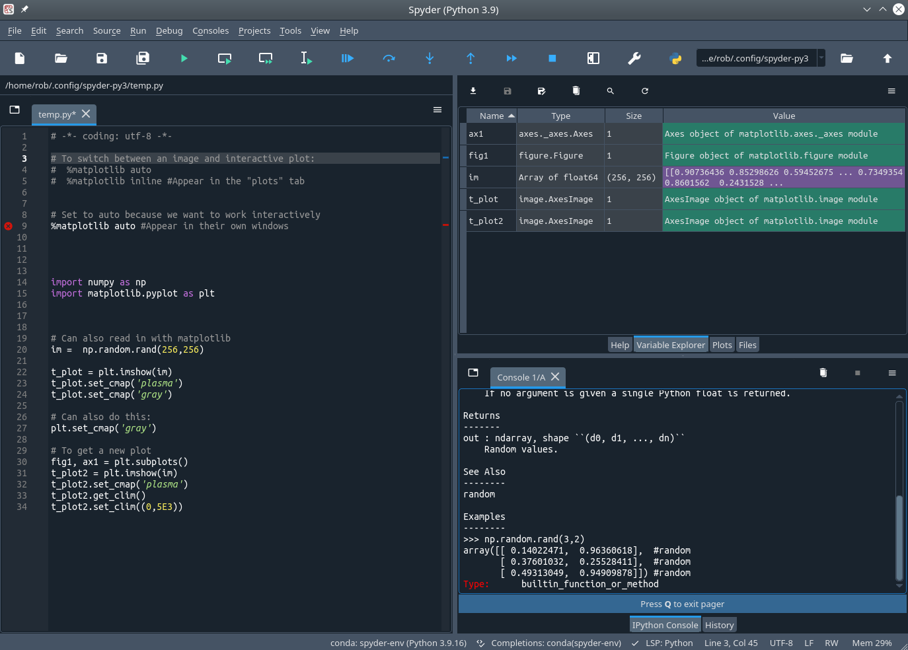
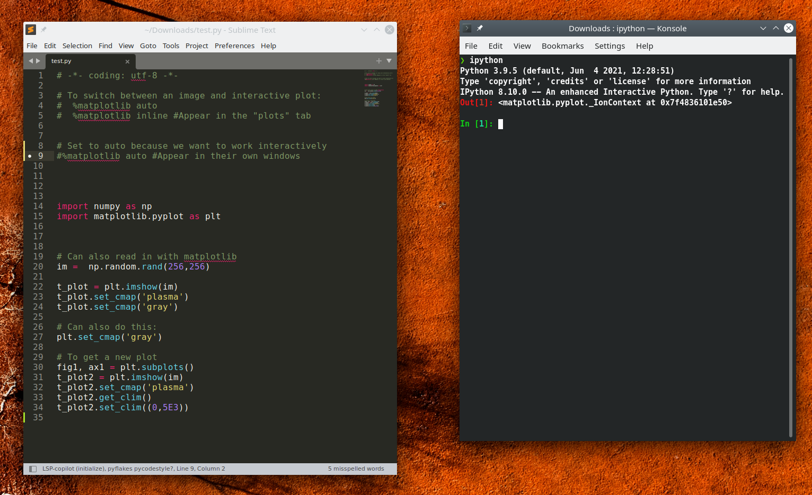

- Do not get stuck in the "throwaway scripts" workflow we will discuss!
- It has its uses but do not abuse it.
- Transition to packages and organize when necessary.
Working Interactively With Python
How code is developed
Three main ways of writing code:
- Formal creation of a pre-planned package that you will re-use or share. Could be test-driven and/or collaborative.
- A "notebook" that mixes code with other elements such as text, equations, or figures. Best used for providing examples, documentation, teaching, or as a form of note taking. It's a poor development platform.
- Exploratory interactive analysis. Trying stuff out with throwaway scripts. These might morph into (2) or (1) above.
The Formal Development Cycle
If you are developing an application or tool that you intend to reuse or share then you would something like:
- Plan ahead how your project will be structured before you start writing code.
- Create a pip-installable package framework in which to work.
- Lay out everything in neat modules.
- Write tests and document.
- Consider test-based development or at least writing tests.
For example, bypytools is a very small package does the above.
Exploratory Development
The process for package creation seems excessive if, for example, you just want to do some exploratory analysis. Perhaps you just want to try some filtering operations on an image or make a few scatter plots. In this case your workflow will be more like:
- Start typing code in a script or function file.
- Run it at the Python command line and see if it works: evaluate any figures or return values at command line.
- Iterate: add code and fix bugs then re-run.
- As the code grows you might start working across multiple functions in multiple source files.
Probably this is what most scientists are doing most of the time.
Exploratory Development
CAVEAT
Exploratory Development: Spyder

Exploratory Development: Spyder

Exploratory Development: PyCharm

What if you don't want an IDE?
- Maybe you don't like the interface. Perhaps it's over-complicated for you.
- Maybe you want to standalone text editor. (e.g. Sublime Text or TextMate)
- Maybe you work a lot over SSH terminals with no GUI.
Spyder and PyCharm seem to basically be a fancy editor with some docked windows attached to an iPython console. They offer advantages for software development but for interactive analysis perhaps less so. So why can't we just use iPython and a text editor?
Exploratory Development: just use iPython

Doing everything in plain iPython
[REMOVE THIS SLIDE?] You will quickly run into issues if you try to use iPython:
- It is not obvious how to run a script. (No "Run" button like in Spyder.)
- If you make a module and import it in iPython but then alter it, the alterations are not available. If you don't know better you will quit and restart iPython.
- It is not obvious where to put your "quick & dirty" modules. Do they always have to be in the current directory?
- Figures do not appear until
plt.show()is called and when that is called the CLI is blocked.
I'm going to show you how to solve all these things and set up iPython as a useful interactive environment. This gives you more options and shows you how some of the magic things that happen in the IDE are really done.
Using iPython as a scientific environment: Running Scripts
The Magic of iPython
At the iPython prompt you can work interactively with results appearing line by line.
>>> import numpy as np
>>> np.sin(3.1412/2)
0.9999999807278949
In addition, iPython has a whole load of magic commands that start with a %. Let's look a few...
>>> %pwd
'/Users/bob/Desktop'
In [2]: %cd ../
/Users/bob/
The Magic of iPython
The % prefix is optional.
In [1]: %pwd
Out[1]: '/Users/bob/Desktop'
In [2]: %cd ../
/Users/bob/
In [3]: pwd
---------------------------------------------------------------------------
NameError Traceback (most recent call last)
Cell In[3], line 1
----> 1 pwd
NameError: name 'pwd' is not defined
In [4]: %automagic true
Automagic is ON, % prefix IS NOT needed for line magics.
In [5]: pwd
Out[6]: '/home/rob'
Running system commands from within iPython
e.g.
In [4]: pwd
Out[4]: '/home/rob/Downloads'
In [5]: find . -name '*.pdf'
Cell In[5], line 1
find . -name '*.pdf'
^
SyntaxError: invalid syntax
In [6]: !find . -name '*.pdf'
./pycharm-community-2023.1.2/help/ReferenceCard.pdf
./PO_81_3601690_0_US.pdf
./PSFj/OrganGrinder/Maintenance/2021_09_17/PSF_OrganGrinder_2021_09_17/2021-09-17_14-39-55_PSF.pdf
./PSFj/Manual.pdf
./Notes.pdf
./cu_TEConn_PWBconnectors.pdf
./b08621055695476aaef795aaa4e779b5-encrypted.pdf
./SuperK COMPACT Datasheet.pdf
./INSIHGT_General_Protocol.pdf
./[ENCRYPTED] MHO852020205.pdf
Running scripts in iPython
Running your code as a script is the most basic thing you could do.
A "script" is a plain text file (by convention having .py extension) that contains a bunch of commands that you want to run in series.
Let's say we make a file called bob.py), put the following lines in it and save it to the Desktop.
print("I am running the script")
t = 10
t2 = t**2
You can run the script using either of the following approaches.
In [1]: %cd /Users/bob/Desktop
Out[1]: %run bob
I am running the script
or
Out[1]: %run /Users/bob/Desktop/bob
I am running the script
Working in iPython
The variable explorer
The variables (t and t2) created by the script are placed in the base workspace of iPython and we can see them as follows
>>> %whos
Variable Type Data/Info
----------------------------
t int 10
t2 int 100
Getting help
e.g.
>>> import matplotlib.pyplot as plt
>>> help(plt.plot)
Simple Benchmarking
The following magic iPython commands can be used for benchmarking.
%time
%timeit
%run -p my_script.py
In [1]: %time np.random.rand(1,100);
CPU times: user 22 µs, sys: 2 µs, total: 24 µs
Wall time: 25.7 µs
In [2]: %timeit np.random.rand(1,100);
648 ns ± 7.47 ns per loop (mean ± std. dev. of 7 runs, 1,000,000 loops each)
In [14]:
Deleting Variables and garbage collection
You can delete individual variables at the iPython prompt with del but this will not give back RAM to the OS.
You can monitor this with the Linux command htop, for example.
To reclaim RAM you may need to garbage collect even after deleting the variable.
>>> import gc
>>> gc.collect()
Using iPython as a scientific environment: Plotting Figures
Making matplotlib usable in iPython
Let's make some data and try plotting it.
>>> y = np.random.rand(100)
>>> plt.plot(y)
[]
No plot appears. Where is it?
Ah! Typing plt.show() causes it to appear but then prompt is blocked.
>>> plt.plot(y)
[]
>>> plt.show()
To fix this turn on interactive plotting: plt.ion().
This can be disabled it with plt.ioff().
Working with multiple figure windows
This sort of thing would make a basic figure:
x = np.arange(0,100,1)
y = x*2 + np.random.rand(len(x))*10
plt.plot(x, y, 'xk')
plt.grid(True)
But say you want to leave this figure open and plot a new figure:
y2 = x*3 + np.random.rand(len(x))*4
plt.plot(x,y2,'or')
That plot command will just overlay data over the first plot.
To avoid that you must first make a new figure window with plt.figure():
y2 = x*3 + np.random.rand(len(x))*4
plt.figure()
plt.plot(x,y2,'or')
Avoiding figures everywhere
When working interactively with multiple figures it easy to end up with too many figure windows everywhere or to over-write an important existing figure with new data. The ability to label figures comes to the rescue. For example:
x = np.arange(0,100,1)
y1 = x*2 + np.random.rand(len(x))*10
y2 = x*3 + np.random.rand(len(x))*4
#Plot y1 and y2 in separate, labelled figures
plt.figure('my_label_01')
plt.plot(x,y1)
plt.figure('my_label_02')
plt.plot(x,y2)
# We can generate a list of available labels:
plt.get_figlabels()
['my_label_01', 'my_label_02']
Add data to the first figure window
plt.figure('my_label_01'); # The first figure window has focus
plt.plot(x,y1,'or') # Overlay red markers to existing line
Avoiding figures everywhere: reuse
By using labels and plt.clf() in your scripts, you will avoid generating huge numbers of figures each time and figures will remain open as you edit and re-run your code.
import numpy as np
import matplotlib.pyplot as plt
# Generate some random data
x = np.arange(0,100,1)
y1 = x*2 + np.random.rand(len(x))*10
y2 = x*3 + np.random.rand(len(x))*4
# Plot y1 data
plt.figure('my_label_01')
plt.clf()
plt.plot(x,y1)
# Plot y2 data
plt.figure('my_label_02')
plt.clf()
plt.plot(x,y2)
Changing labels
It makes sense to always assign a label to a figure whenever you make one. Labels are managed as follows:
# Labels in existing plots
In [30]: fig.get_label()
Out[30]: 'my_label_01'
In [31]: fig.set_label('newlabel')
Using iPython as a scientific environment: Developing Modules
Developing modules interactively with iPython
Let's modify our bob.py file
from earlier so it contains a couple of functions:
def intro():
print("I am running the script")
t = myVar()
t2 = t**2
print(t2)
def myVar():
return 10
In iPython ensure your working directory is the same as that of the module and try importing and running it.
In [1]: %pwd
Out[1]: '/Users/rob/Desktop'
In [2]: import bob
In [3]: bob.intro()
I am running the script
100
Developing modules interactively with iPython
But! If you edit bob.py so that myVar so it returns a different number, this will not be implemented if your re-run bob.intro(). Running import bob again will not help. The solution is to enable module auto-reloading. Close iPython and restart it then do the following.
In [1]: %load_ext autoreload #load the auto-reload extension
In [2]: %autoreload 2 #reloads all modules except excluded ones
In [3]: import bob
In [4]: bob.intro()
Try editing the return value of myVar or make any other changes you fancy. When you run bob.intro() the changes take effect. This is great! It also works with other modules, so if you have imported multiple things that depend on each other all are reloaded each time.
Developing modules interactively with iPython
Auto-reloading works with all modules. So you can start making a package and install it with pip -e . then changes in it will be reflected as you save and re-run the code.
You can also put modules anywhere into the Python path if you are not ready to set up a package. Python looks in the list sys.path and imports modules it finds there. So let's say we have our bob.py on the Desktop but we have a different working directory and we want to import it. This is how we can do that:
In [1]: %pwd
Out[1]: '/Users/bob/Dropbox/work/development'
In [2]: sys.path.append('/Users/bob/Desktop')
In [3]: import bob
In [4]: bob.intro()
I am running the script
100
You can build up a list of useful paths and add them each time iPython opens using a startup file (coming up).
Using iPython as a scientific environment: Customizing iPython
Customizing iPython
We have seen a bunch of customizations. How to apply them automatically each time iPython is started? Edit the python_config.py file.
To find the folder containg the file type ipython locate profile default in the system (not iPython) prompt.
On Unix-like systems it should be at ~/.ipython/profile_default/ and the iPython config file should be at ~/.ipython/profile_default/ipython_config.py
If it is missing you can make it with ipython profile create
Customizing iPython
Open this file in your favourite editor. Find the following two settings, edit and uncomment the lines so that the read:
c.InteractiveShellApp.extensions = ['autoreload']
c.InteractiveShellApp.exec_lines = ['%autoreload 2']
This loads autoreload extension and sets its state to 2, which reloads all modules each time they are called apart from modules explicitly excluded from reload.
If you wish to block reload of large modules that might take time you can do it as follows
c.InteractiveShellApp.exec_lines = ['%autoreload 2','aimport - numpy scipy']
You can verify that worked after starting iPython:
In [1]: %aimport
Modules to reload:
all-except-skipped
Modules to skip:
numpy scipy
Using your own editor
The %edit magic is used to open files in an editor. You can choose your editor by modifying the config file. The following change sets it to use SublimeText
c.TerminalInteractiveShell.editor = 'subl'
The iPython startup file
You can a;sp run arbitrary Python code each time iPython starts up.
Create a .py file in ~/.ipython/profile_default/startup and edit it.
The following ~/.ipython/profile_default/startup/00_mystartup.py, for instance, imports a bunch of commonly used tools.
print('Running startup file')
# Do common imports
import os
import sys
import numpy as np
import matplotlib.pyplot as plt
Get rid of the extra space between lines
If you don't like the newline between prompt lines you can get rid of it as follows:
from IPython.terminal.prompts import ClassicPrompts
ip = get_ipython()
ip.separate_in = '' # No spaces between lines
Of course that can go into your iPython startup script.
Jupyter Notebooks
Are Jupyter notebooks the answer?
At first glance Jupyter notebooks seem like a good option. The allow you to see your workflow. Things can be re-run easily by pressing the run button. Results are saved.
The issue, however, is that for any substantial analysis you will need to write potentially large numbers of functions (or even multiple packages) and this isn't part of the Jupyter workflow. You will learn no software dev skills if you try sticking with Jupyter. Jupyter is good if you want to summarize results at a very high level at the end, use it a notebook for progress reports, etc. It does not answer the issues above.
But I liked Jupyter notebooks!
You can have both! Start Jupyter and do some stuff then at the bash CLI:
jupyter console --existing
The %connect_info typed into Jupyter Notebook will help you connect to it if there are multiple running notebooks.
jupyter qtconsole
You can have both! Start Jupyter and do some stuff then at the bash CLI:
pip install pyqt5-tools
Then
jupyter console
The %qtconsole magic spawns a new terminal window with the same kernel.